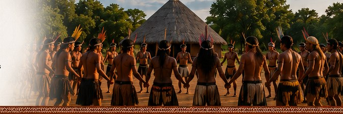
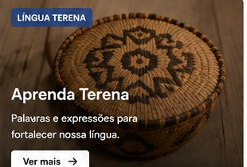

Memória • língua • tradições
Cultura Terena
Nossa cultura é viva e se fortalece a cada geração. Conheça memória, história, língua, tradições e calendário cultural.
Navegue pela Cultura
👴
Memória Viva / Anciãos
Sabedoria e ensinamentos dos guardiões da memória Terena.
🏺
História Terena
Origens, trajetória e marcos históricos do povo Terena.
💬
Língua Terena
Palavras, expressões e fortalecimento da nossa língua.
🪶
Tradições e Saberes
Costumes, rituais, danças, cantos e conhecimentos tradicionais.
📅
Calendário Cultural
Eventos e celebrações que marcam o ciclo cultural Terena.
Destaques da Cultura

